<nav class="ami-component-binnacle-navbar">
    <span routerLink="/add" routerLinkActive="active">
        
    </span>
    <span routerLink="/history" routerLinkActive="active">
        
    </span>
</nav>
